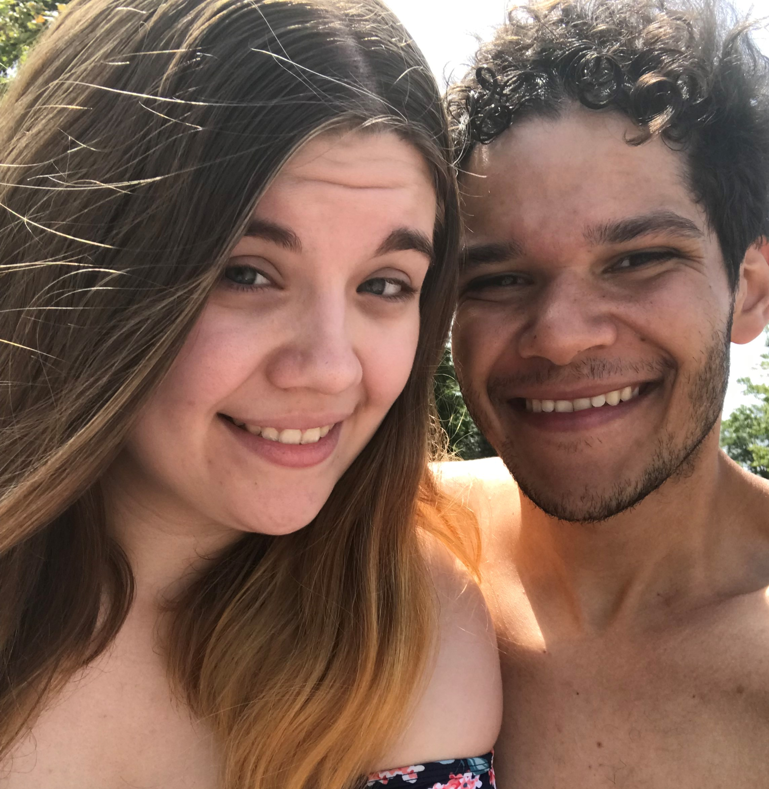
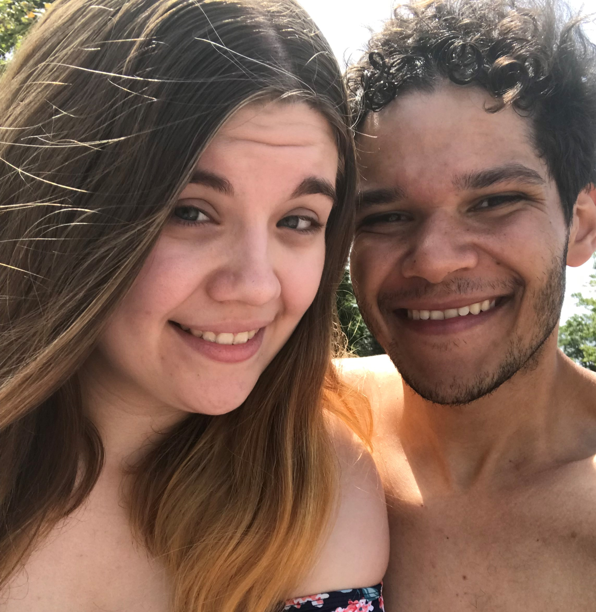
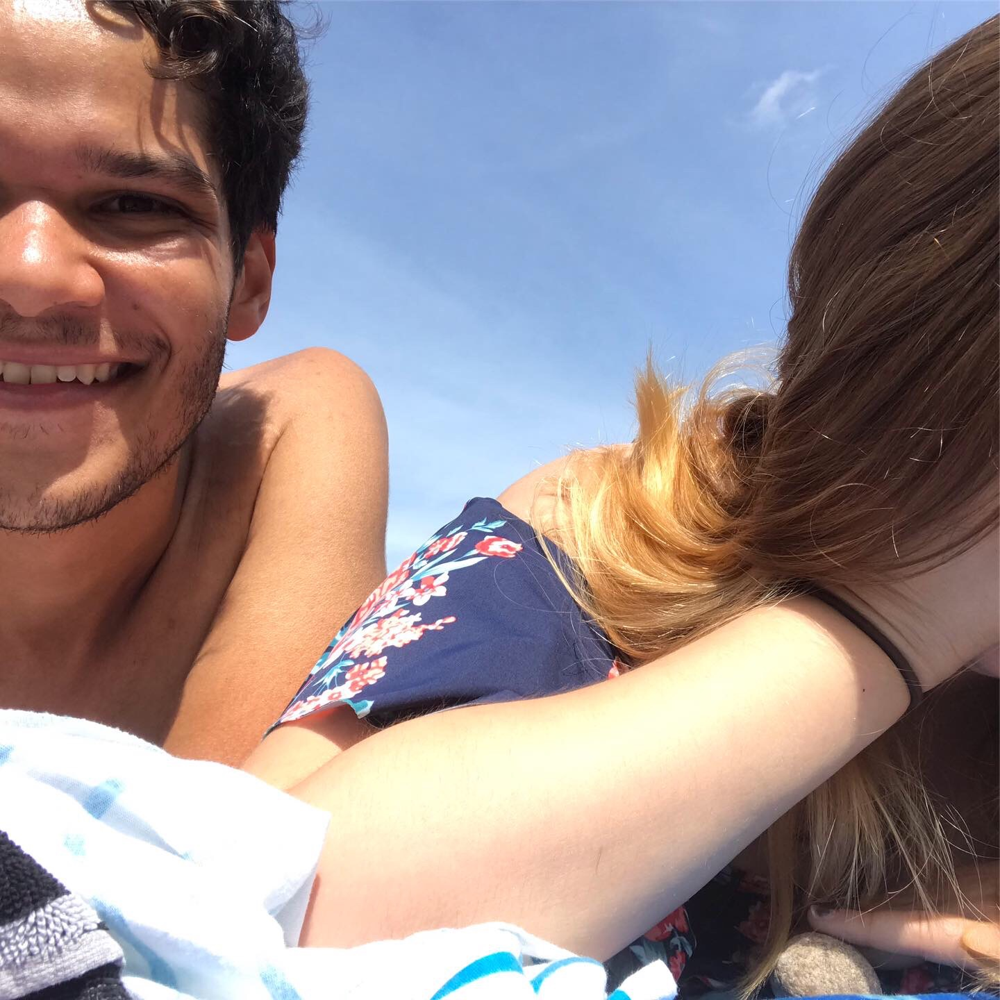
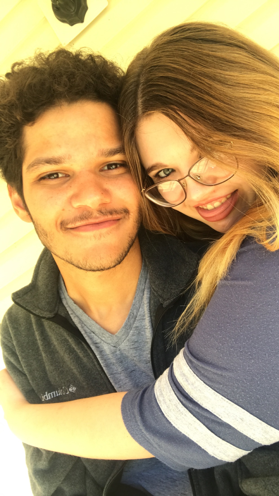
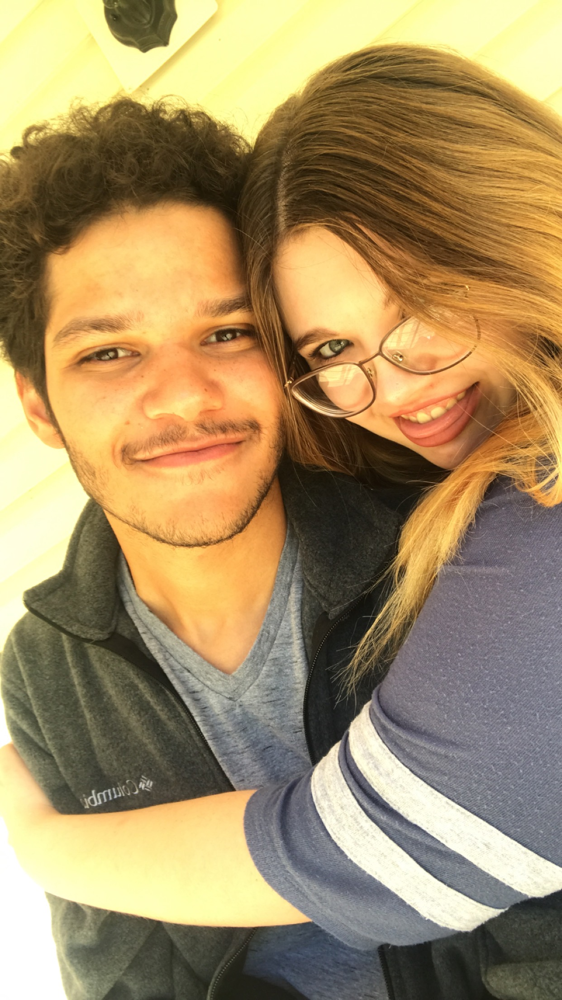

Our First Picture
You know this picture of course, it's our first one! Funny how Pokemon came out this day when we took it and now on our third anniversary a new game comes out. Fitting, right? I remember you said you were nervous to take it. I also remember Perdo asking if it was me when you posted it.
Our (first) Favorite Picture
This has always been one of yours (and mines) favorite pictures. You make me even more happy today than I was in this picture.
1st Anniversary

Two years ago, wow! Obviously these are from our first anniversary. It's crazy how much different we look from then. I had such a great day with you in the book store and dinner that night was so good.
2nd Anniversary
Last year! I had such a fun time with you that day. Pinball Pete's was so much fun and I thik it's safe to say we found your favorite resturant that day, the Slurping Turtle. I'm surprised you don't try to convince me to get it more often.
The best picture spot
You just love to take the pictures on the porch :).
More fun and memories
 

Delecious food, great music, a cute woman and a cat. What more could I ask for? Comic con was a blast too! I was SO nervous about wearing my cosplay but you kept my spirits up and hyped me up for it. I don't regret it one bit!
You put up with my corny jokes and goofy faces
 

I wish I remembered what the joke I made that day on the beach was. I'm glad I was able to catch your reaction to it from start to end. Thankfully you can stand me even when I can't be serious too. But you also love to play along too so I could never compalain! (I still hate that I mistyped shirt and it came out as shorts)
I hope you've enjoyed looking over some of my favorite memories we've made so far! We have many many
more years of memories to make and fun times to have. You've stuck with me through everything and I
couldn't imagine wanting anyone else there except you. I want to be the person at your side through
every step. Hopefully you don't get tired of me ;). For the
next part of this I want you to do the following for me:
1) Turn away from me
2) Be prepared to say any words on the next screen outloud
3) hold your phone above your head
4) click the button!